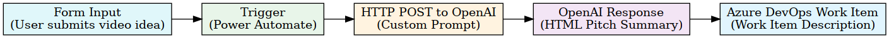

How a Creative Team Learned to Love Azure DevOps
I know, I know. Azure DevOps is an engineering tool. It's built for sprints and pull requests and CI/CD pipelines. It's not exactly what you picture when you think "creative production workflow."
But here's the thing: it works for us. And the journey of figuring out how to make it work taught me a lot about what creative teams actually need to stay sane.
Learning from Engineers
Sitting in an engineering org for 15 years, I've watched how software teams manage their work. Agile. Sprint planning. Standups. Retrospectives. Backlogs groomed within an inch of their lives.
Creatives are not naturally like this. We're visual thinkers, not systems thinkers. We're deadline-driven, not sprint-driven. We tend to keep things in color-coded Excel files, Word docs, and PowerPoint decks that help us see things visually.
But I was always intrigued by the transparency that engineering teams had. Everyone knew what everyone was working on. There was a system. There was accountability. Nobody was surprised when something was due.
I wanted that for my team. Not the rigidity, but the clarity.
What We Actually Needed
When I started thinking about process for a creative team, here's what mattered:
- Transparency. Everyone should be able to see what's in the queue, what's in progress, and what's blocked.
- Accountability. If something is assigned to you, it's yours. No ambiguity.
- Preventing overwhelm. If a work item has been sitting in your queue for weeks, that's a signal. We need to see it before it becomes a crisis.
- Knowing when to scale. Are we drowning? Do we need contractors? Can we slow down? You can't answer those questions without data.
Project management isn't just about tracking tasks. It's about protecting your team.
Why Azure DevOps
Yes, it's an engineering tool. But here's why it works for us:
Automation
This is the big one. When we create a work item for a video project, we don't manually add all the subtasks. Power Automate flows kick in and automatically create the tasks that every video needs: filming, uploading, editing, review, publish. It happens instantly. No one forgets a step.
Knowledge Sharing
Being in the same system as the engineering teams we work with means we speak the same language. We can link our work items to their wiki articles. We can share dashboards. When a PM asks "what's the status of the video for Feature X," we can show them in a tool they already understand.
Customization
We've bent Azure DevOps to fit our workflow, not the other way around. Custom fields for video type, platform, stakeholder. Custom boards that reflect how creative work actually moves. It took time to set up, but now it's ours.
The Power Automate Magic
Power Automate has been a game changer for eliminating repetitive work. Here's what we've automated:
- Task creation. New video work item? Automatically generates subtasks for each phase of production.
- Notifications. When something moves to "Ready for Review," the right people get pinged automatically.
- Status updates. Stakeholders get weekly digests pulled straight from the board. No one has to manually write status reports.
Every hour we save on process is an hour we get back for creative work.
AI in the Loop
Here's where it gets fun. We use Microsoft Forms to ingest new requests from stakeholders. When a form comes in, we have a Power Automate flow that makes an HTTP POST call to the GPT-5 API.

What does GPT do? It acts as a mini producer. Based on the request details, target date, and video type, it generates a workback schedule. Suggested milestones. Realistic timelines based on our historical data.
Is it perfect? No. But it's a starting point that used to take 30 minutes to create manually. Now we review and adjust instead of building from scratch.
AI as a producer's assistant. I never thought I'd type that sentence, but here we are.
The Art of PM'ing
I've come to believe that project management is an art form. Not the tool, not the methodology, but the practice of it.
Good PM'ing is about:
- Seeing the patterns before they become problems
- Protecting your team's time and energy
- Creating systems that flex instead of break
- Improving continuously, week over week, month over month
I love looking back at where we were six months ago versus where we are now. Faster turnarounds. Fewer surprises. Less burnout. That's the real metric.
It's Never Done
The process is never finished. Every few weeks we look at what's working and what's not. Where are the bottlenecks? What's causing stress? What automation could we add?
Finding efficiencies, improving delivery, protecting the team, that's not overhead. That's the work. And when you get it right, everything else gets easier.
Even for a creative team using an engineering tool.
Comments